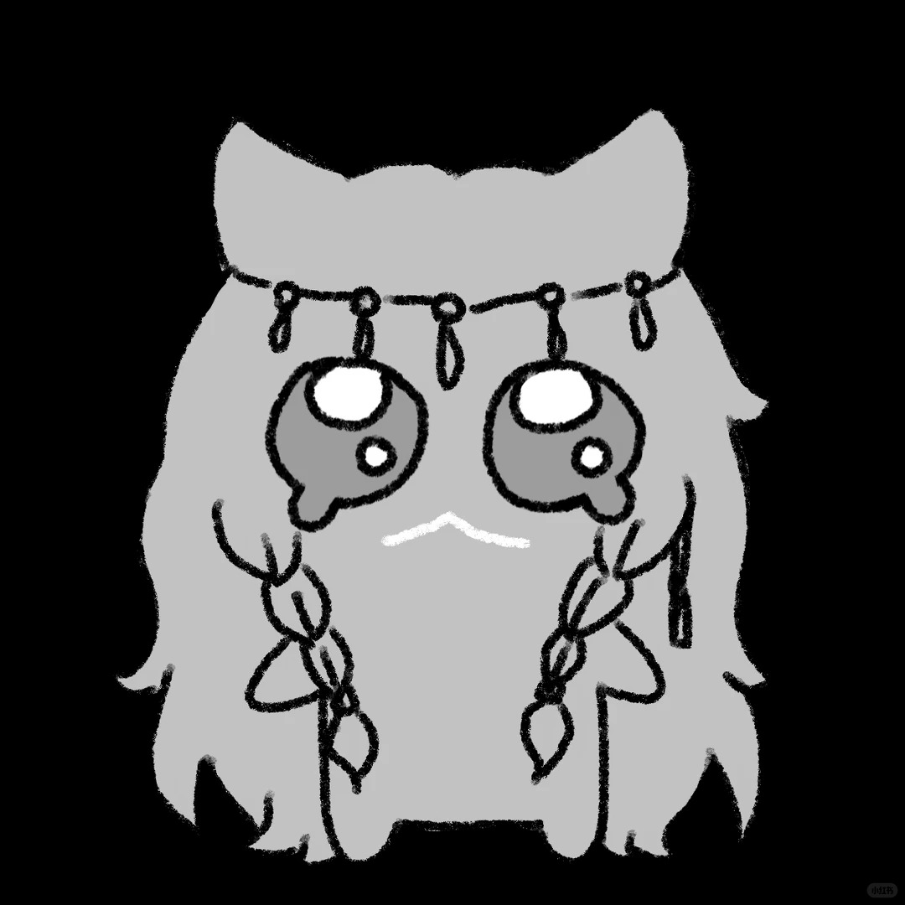

言一
Yán Yī · 言出如一
苦逼大三会计学生一枚，偶尔写代码。最近在备考六级，也对税务和审计的事情感兴趣——所以学习页里放的都是这些方向的常去之处。
相信「写下来才会想明白」，也相信好看的工具会让人更愿意开始做事。这个站就是这两件事的试验田。
关于这个站
这里是我的自留地：放长文和碎片，放拍到的光，也放每天要用的工具——日历、天气、番茄钟、白噪音。没有推荐算法，没有信息流，进来就是你看到的一切。
技术上它朴素得近乎固执：纯 HTML / CSS / 原生 JavaScript，没有框架，没有构建步骤，托管在 GitHub Pages。番茄钟和待办的数据只存在你自己的浏览器里，不上传任何地方。
有一个不那么显眼的设计：全站的主色会随二十四节气流转——春青、夏朱、秋金、冬黛。你现在看到的颜色，就是此刻节气的颜色。
—
—
站点编年史
-
BETA 0.4 · 2026 年秋节气主题色上线，全站色调开始随节气流转；新增关于页与友邻板块，补上了自定义 404。
-
BETA 0.3 · 2026 年 9 月新增学习与娱乐两个板块；文章系统落成，页脚印上朱砂印章，埋下两枚彩蛋。
-
BETA 0.2 · 2026 年 9 月日历（农历 / 节气 / 节日）、天气与相片馆上线，Liquid Glass 设计系统定型。
-
BETA 0.1 · 2026 年夏末第一块砖：首页和文章列表。那时还没有印章，也没有节气色。
友邻
常来往的朋友们。如果你的站也想挂在这里，发邮件告诉我。